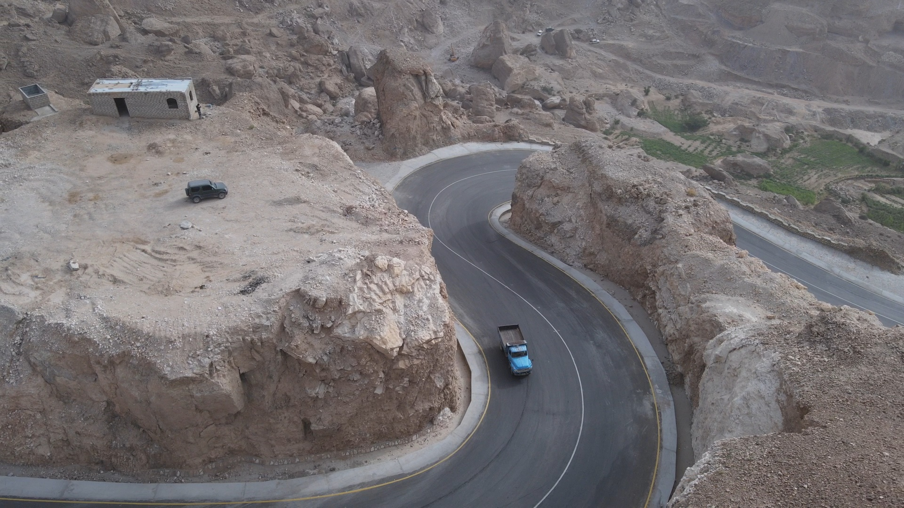
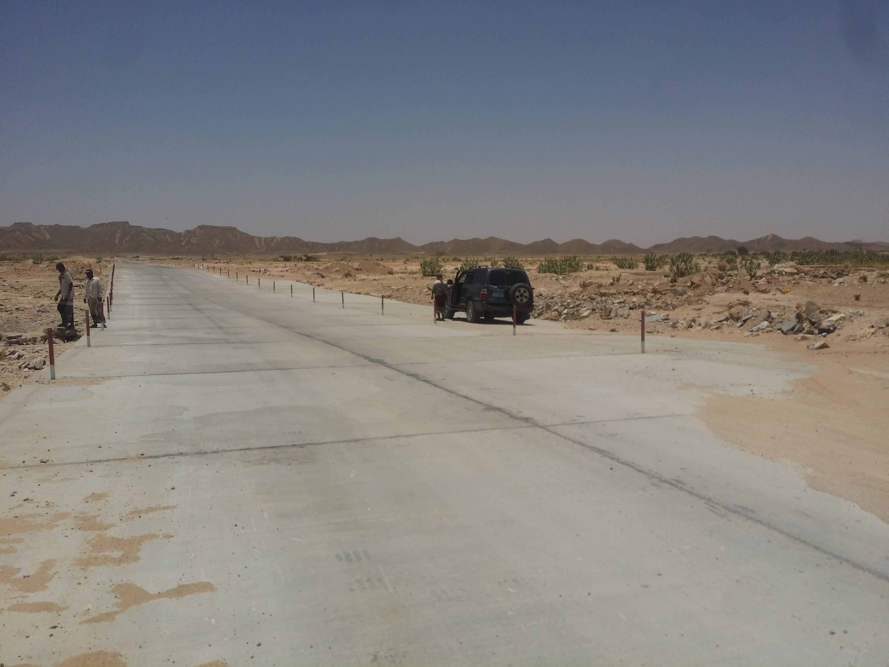

مهندس مدني واستشاري مساحة ميداني | مؤسس منصة "نيو فيوتشر"
مهندس مدني بخبرة عملية تزيد عن 8 سنوات في التنفيذ الميداني والإشراف الهندسي لمشاريع الطرق الجبلية والحضرية، شبكات البنية التحتية، المنشآت السكنية، ومشاريع خطوط الكهرباء. متخصص في الرفع والتوقيع المساحي الدقيق، حساب الكميات وإعداد المستخلصات، وتطوير أنظمة المكتب الفني الحديثة لسد الفجوة بين المخططات الهندسية والواقع الميداني بأعلى معايير الجودة.
قيادة أعمال الهندسة والمساحة وتوقيع المسارات وحساب الكميات المنفذة بدقة متناهية.
🔍 تكبير الصورة

بطول 14 كم • المرحلة الأولى
مشروع عقبة كتبة – حوارم
الإشراف المباشر على أعمال الردميات والطبقات الترابية والأسفلتية وضبط استواء المسارات.
🔍 تكبير الصورة

بطول 260 كم • صيانة طارئة ومسوحات
طريق عصم - ثمود - رماه
إجراء المسوحات الميدانية لتقييم الأضرار وتصميم الحلول الهندسية العاجلة والإشراف على الترميم.
السجل المهني والخبرات
مسيرة عملية متدرجة في قيادة المشاريع الهندسية والمساحية مع كبرى المؤسسات والجهات الاستشارية.
يوليو 2025 – فبراير 2026
مهندس مشروع ومساح | مؤسسة علي حسين مبارك وإخوانه
الإشراف الفني والميداني الشامل وإدارة أعمال المساحة الدقيقة على مشروع سفلتة طريق عقبة الحبيب شهاب الدين - المرحلة الأولى بمديرية تريم.
أكتوبر 2023 – مايو 2025
مهندس استشاري مساحة | صندوق صيانة الطرق - عدن
استشاري مساحة في مشروع تأهيل الشوارع الحضرية بمديرية سيئون، ومراجعة وتدقيق المخططات المساحية ومطابقة التنفيذ للمواصفات الفنية.
فبراير 2023 – سبتمبر 2023
مهندس مشروع | محافظة حضرموت - المكلا
إدارة وتنفيذ مشروع بناء عمارة سكنية بالمكلا، والإشراف على مراقبة الجودة والتشطيبات النهائية وفق المعايير الهندسية.
مارس 2021 – يناير 2023
مهندس مشروع ومساح | مجموعة العمودي للمقاولات
قيادة أعمال الهندسة والمساحة وحساب الكميات وإعداد التقارير الدورية في مشروع سفلتة طريق عقبة رحاب – الفرضحة بطول 33 كم في تضاريس جبلية وعرة.
نوفمبر 2019 – مارس 2021
مهندس مشروع ومساح | مجموعة العمودي للمقاولات
الإشراف المباشر على أعمال الردميات والطبقات الترابية والأسفلتية وأعمال المساحة في مشروع سفلتة طريق عقبة كتبة – السلاسل - حوارم المرحلة الأولى بطول 14 كم.
أكتوبر 2018 – نوفمبر 2019
مهندس تصميم ومساحة وإشراف | مجموعة العمودي للمقاولات
💡 طريقة الاستخدام الصحيحة: افتح محادثة جديدة في أي أداة ذكاء اصطناعي (Gemini أو ChatGPT أو Claude)، ثم انسخ الأمر الأول وأرسله، وانتظر حتى يجيب، ثم أرسل الأمر الثاني بالتسلسل حتى يكتمل نظامك بدون أخطاء برمجية.
1. الأمر الأول: تأسيس ملفات الإكسل
أريدك أن تتصرف كمهندس أتمتة بيانات خبير (Python & Excel Automation Expert).
هدفي هو بناء نظام أتمتة محلي (يعمل بدون إنترنت على جهازي) لإدارة تقارير مشروع هندسي أو إداري متكرر. يتكون النظام من ملفات Excel كقواعد بيانات وقوالب، وسكربتات Python للمعالجة، وملف Bat كواجهة تشغيل.
في هذه المرحلة الأولى، أريدك أن تصمم لي هيكل "ملفات الإكسل" المطلوبة فقط، بناءً على القواعد التالية لتجنب أخطاء التنسيق:
1. ملف الإدخال اليومي (daily_input.xlsx): يحتوي على جدول بسيط لإدخال أعمال اليوم (البند، الموقع، الكمية، الحالة، الملاحظات) ليكون هو واجهة الإدخال الوحيدة.
2. ملف التقرير اليومي (daily_report_master.xlsx): قالب جاهز ومنسق. (ملاحظة هامة جداً: يجب أن يُبنى القالب بخلايا مدمجة واضحة، ولا تسمح لكود البايثون لاحقاً بتغيير ارتفاع الصفوف أو عرض الأعمدة حتى لا تتداخل الصور والنصوص).
3. لوحة التتبع الشاملة (Master Tracker): ملف إكسل يحتوي على 3 شيتات (لوحة التتبع التراكمية، ملخص الإنجاز Dashboard، وسجل تواريخ الإنجاز History Log).
اكتب لي هيكل هذه الملفات وأسماء الأعمدة المطلوبة فيها لتناسب مشروعي، ولا تكتب أي كود بايثون في ردك هذا، فقط صمم لي قواعد البيانات وأسماء الشيتات.
2. الأمر الثاني: محرك التقرير اليومي والتتبع
ممتاز. الآن سنكتب كود البايثون الأساسي (generate_report.py) الذي سيقوم بقراءة البيانات من "daily_input.xlsx" ويحدث "التقرير اليومي" و"لوحة التتبع" معاً بضغطة زر.
لتجنب الأخطاء البرمجية والهندسية، يجب أن يلتزم الكود بالآتي نصاً:
1. الدمج الذكي (Smart Batch Grouping): إذا تم إدخال نفس البند في عدة مواقع مختلفة، يجب أن يدمجها الكود في سطر واحد داخل التقرير اليومي ويجمع الكميات، حتى لا يتكرر اسم البند.
2. إدراج الصور بدقة: استخدم أداة TwoCellAnchor من مكتبة openpyxl لإدراج الصور فوق الخلايا المحددة بدقة الميلي متر، ولا تستخدم طرق الإدراج البسيطة التي تسبب تمدد أو تشوه الصور.
3. التحديث التراكمي للوحة التتبع: قم بتحديث حالة العناصر في لوحة التتبع، وتوثيق تاريخ اليوم ورقم التقرير لكل بند في شيت "سجل التواريخ (History Log)".
4. الأرشفة الذكية: بعد توليد التقرير وإنشاء نسخة PDF باستخدام win32com.client، يجب أن يقوم الكود بنقل صور اليوم من مجلد photos إلى مجلد Archive منظم بالتاريخ، لحماية الملفات من التضخم.
5. التنبيهات (Hold Points): أضف ميزة تُصدر تحذيراً (Warning) في شاشة الدوس إذا تم تجاوز تسلسل منطقي (مثلاً: محاولة تسجيل بند "الصب" لبند حالته السابقة "لم يبدأ").
اكتب كود (generate_report.py) متضمناً كافة هذه الميزات والاعتبارات.
3. الأمر الثالث: التقارير الدورية والـ RFI
الآن نحتاج إلى سكربتين إضافيين لتكتمل المنظومة:
الأول: periodic_report.py (للتقارير الأسبوعية والشهرية).
الثاني: generate_rfi.py (لتوليد نماذج وطلبات الفحص أو التسليم RFI).
يجب أن تتلافى الأخطاء التقنية التالية بدقة:
1. في periodic_report.py: استورد جميع المكتبات المطلوبة في أول سطر دون استثناء لتجنب خطأ NameError، وتحديداً:
from datetime import datetime, timedelta
from copy import copy
from openpyxl.formatting.rule import DataBarRule
from openpyxl.worksheet.pagebreak import Break
2. في التقارير الدورية: اجعل الكود يستخرج "سجل المخاطر والتأخيرات" تلقائياً من الملاحظات المسجلة في شيت "سجل التواريخ" خلال فترة التقرير.
3. في generate_rfi.py: عند تصميم قالب الإكسل أو الوورد لطلبات الفحص، ابنه على شبكة موحدة (مثلاً 12 عموداً قياسياً) لتجنب انقسام الخلايا أو تشوه الجداول (لا تستخدم جداول متداخلة).
4. اجعل سكربت الـ RFI يبحث في لوحة التتبع عن البنود التي حالتها "مكتمل"، ويضعها في نموذج PDF، ثم يسألك إذا كنت تريد تحويل حالتها إلى "مكتمل ومستلم" لمنع تكرارها في الطلبات القادمة.
اكتب الأكواد المطلوبة مع مراعاة هذه الشروط الصارمة.
4. الأمر الرابع: لوحة التحكم الشاملة
أخيراً، أريد إنشاء واجهة تشغيل للمنظومة بالكامل عبارة عن ملف باتش (Main_Menu.bat) يجمع كل السكربتات السابقة في قائمة خيارات أو واجهة رسومية أنيقة.
لتجنب أخطاء نظام الويندوز وإغلاق الشاشة المفاجئ، يجب الالتزام بالآتي:
1. دعم اللغة العربية: يجب أن يبدأ الملف بالأمر chcp 65001 >nul لضمان عدم ظهور الحروف العربية كرموز غريبة.
2. حماية المتغيرات: لا تستخدم علامة & داخل جمل الطباعة echo لأن الويندوز يعتبرها أمراً لتشغيل برنامج جديد وتسبب خطأ.
3. النسخ الاحتياطي التلقائي: قبل تنفيذ أي خيار من القائمة، يجب أن يقوم السكربت بنسخ لوحة التتبع وملف الطلبات إلى مجلد فرعي Archive\Backups كحماية للبيانات.
4. الحقن الديناميكي للمكتبات: عند تشغيل خيار التقارير الأسبوعية والشهرية، قم بتمرير أمر بايثون يحقن مكتبات (timedelta, DataBarRule) في الذاكرة لتجنب أي تعارض إذا نسي المستخدم تثبيتها في الملف الرئيسي.
5. فصل الأوامر: استخدم نظام goto لعمل الأوامر خارج قائمة الإدخال، وضع pause بعد كل عملية ليتسنى للمستخدم قراءة النتائج قبل العودة للقائمة الرئيسية.
اكتب كود Main_Menu.bat كاملاً واحترافياً.
🎯 سلسلة أسرار المساحة الميدانية: قبل أن تضغط أي زر (شروحات الفيديو)مشاهدة السلسلة ⬇
لمتابعة سلسلة أساسيات المساحة الميدانية واحتراف جهاز التوتال ستيشن من المرحلة الصفرية على قناة نيو فيوتشر: